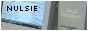
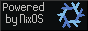

nulsie 
![hey]() i'm just a guy interested in coding and computer science in general. i spend my time on full-stack development, pen-ops(my term for penetration), networking, Linux-related things, hard/soft modding, electric-stuff and in random fields of cs, i'm proficient in the holy trinity of web dev; html, CSS and JS, then , and a bunch of other languages, dabbles a bit with and stuff. fun fact: i had once even dabbled with but stopped in a week. i always try(although not always successful) to make the web successfully do almost anything which is possible in cs, like PIES, which proved that you could make apps which are virtually unhackable in web, contrasting the usual assumption that web is less safer than systems. at the same time i like to hack, break and disassemble network, web infrastructures and apps to make them better, safer and more than anything, open-source.
i'm just a guy interested in coding and computer science in general. i spend my time on full-stack development, pen-ops(my term for penetration), networking, Linux-related things, hard/soft modding, electric-stuff and in random fields of cs, i'm proficient in the holy trinity of web dev; html, CSS and JS, then , and a bunch of other languages, dabbles a bit with and stuff. fun fact: i had once even dabbled with but stopped in a week. i always try(although not always successful) to make the web successfully do almost anything which is possible in cs, like PIES, which proved that you could make apps which are virtually unhackable in web, contrasting the usual assumption that web is less safer than systems. at the same time i like to hack, break and disassemble network, web infrastructures and apps to make them better, safer and more than anything, open-source.
i'm also a big fan of decentralization(not to be confused with web3) as seen in my projects like EtCAN and you can see a recurrence of the use of decentralization in most of my projects, as i think it's where us the indies get the independence(only if done correctly) even though i don't really think Web3 would take-off that fast and don't think it's going be a success at all if handled by crypto bros.
it's obvious that i'd be more than interested in the interconnected network(aka the  ). people might say
). people might say  ARPANET laid the foundation, but internet made everything ACTUALLY accessible. and my pings of gratitude to the internet is enough for bringing an entire website down(no need of botnets). i think i've had a natural talent in hosting stuff on the internet since i had an interest in these sort of things. in the internet i'm obviously interested in the server-side tech and i'm interested in the protocols which makes the whole thing work. and if you ask me what i'm interested most IN the server-side tech, i really just don't know, but i'd bet that i like the set-up process of it and playing on pushing the limits of hosting, and more than that, i think i'm interested in the system of data being transmitted and managed in these servers
ARPANET laid the foundation, but internet made everything ACTUALLY accessible. and my pings of gratitude to the internet is enough for bringing an entire website down(no need of botnets). i think i've had a natural talent in hosting stuff on the internet since i had an interest in these sort of things. in the internet i'm obviously interested in the server-side tech and i'm interested in the protocols which makes the whole thing work. and if you ask me what i'm interested most IN the server-side tech, i really just don't know, but i'd bet that i like the set-up process of it and playing on pushing the limits of hosting, and more than that, i think i'm interested in the system of data being transmitted and managed in these servers ![]() , my main things being researching on bypassing the annoying protocols and headers to freely transmit data(as seen in my projects like, again EtCAN and GiliFeed), i know the protocols are there because of security issues but still cmon. yet i think it is important to say what i hate the most, atleast for now, and it is that how difficult it is to pull and share data because of the increasingly rigid rate-limiting of big-tech(notably Reddit and Twitter, fuck you X).
, my main things being researching on bypassing the annoying protocols and headers to freely transmit data(as seen in my projects like, again EtCAN and GiliFeed), i know the protocols are there because of security issues but still cmon. yet i think it is important to say what i hate the most, atleast for now, and it is that how difficult it is to pull and share data because of the increasingly rigid rate-limiting of big-tech(notably Reddit and Twitter, fuck you X).
apart from web and net, i'm interested in ![tux]() Linux(obviously i'm a Linux user and daily-drive Linux), modding Linux,
Linux(obviously i'm a Linux user and daily-drive Linux), modding Linux, ![Bash]() scripting and other Linux stuff. I could also be considered a reverse-engineering guy, entry-level at best. then i dabble a bit with operating system development, kernel development (i personally think they are two different things) and other system-level stuff. other than all the virtual things, i really like the electronic/hardware part too, and i play a lot with mmicrocontrollers(aww) and SBCs. and like every good ol' cyber-junkie, i like PC building and overclocking.
scripting and other Linux stuff. I could also be considered a reverse-engineering guy, entry-level at best. then i dabble a bit with operating system development, kernel development (i personally think they are two different things) and other system-level stuff. other than all the virtual things, i really like the electronic/hardware part too, and i play a lot with mmicrocontrollers(aww) and SBCs. and like every good ol' cyber-junkie, i like PC building and overclocking.
i'm also the founder of GiliNet, a mass decentralized, collaboration community launched to develop, maintain, inspect, decompile and to protect open source projects and security infrastructures.
Useless fact
![]() check the source genius!
check the source genius!
Writings
just my ramblings on stuff
Project Briefs
- ColdStrain — ColdStrain is an advanced, client-side JavaScript reconnaissance framework for red teaming. (JS / WebRTC)
- EtCAN — EtCAN is a decentralized, client-side, zero-knowledge, encrypted file transfer and steganography utility. (JS / IPFS)
- LycaClient — a lightweight, open-source web client for Bluesky designed to return control to the user. (Vanilla Web / ATProto)
- PIES — A local-first storage vault featuring AES-256 encryption and a 'Duress Passkey' for emergency data purging. (CryptoJS / LocalStorage)
- PIESImages — The image storage version of the PIES app. (CryptoJS / LocalStorage)
- TISH — A fully client-side, purely static threat intelligence dashboard. (MITRE ATT&CK / NVD)
there are some more but they're pretty old or are of minor importance.
Projects Directory(For Raw Source)
Click on any file or folder to see the source codes in raw form.
[+] projects/
COMM-LINKS
Contact me only by Discord or Matrix, and i don't use e-mail because i only like quick disposable conversations and e-mails are not that disposable. if you're sending something sensitive, use PGP or AGE and use the keys provided and i prefer Matrix.
![A Discord link Button]()
AGE KEY: age16em7p2ucvcuwd0u90k5y6lfw5gdw6qrk6qayuvrt0gjymeh9uecswspvxz
Linkback
if you'd like to link back to my site, feel free to use the button below. just copy the snippet into your own code.
<a href="https://nulsie.mywire.org" target="_blank">
<img src="https://nulsie.mywire.org/btn.png" alt="nulsie">
</a>

![A button linking to the ipfs.tech website and showing the logo of IPFS]()
Hacker Webring

if you're using a bare-bone browser or think that using CSS and JS is illegal, this is the version of my site for you.